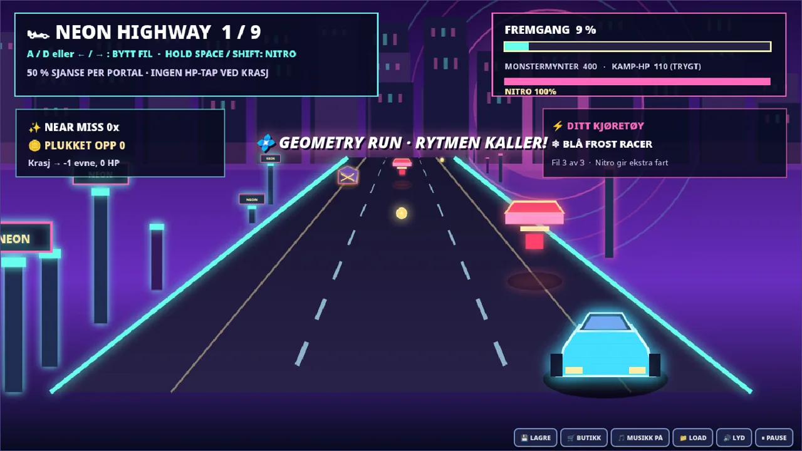
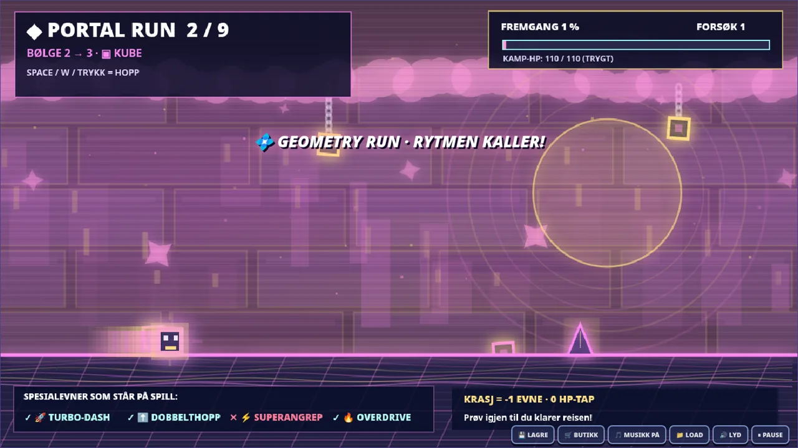
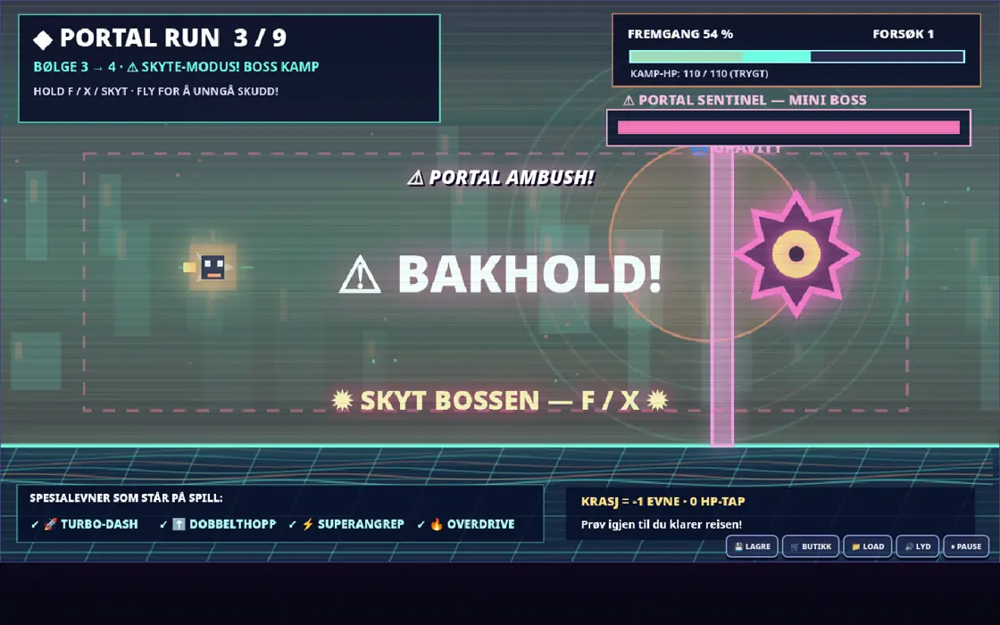
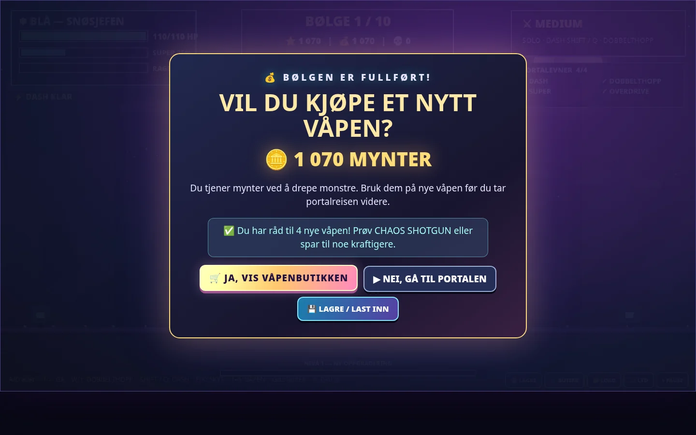
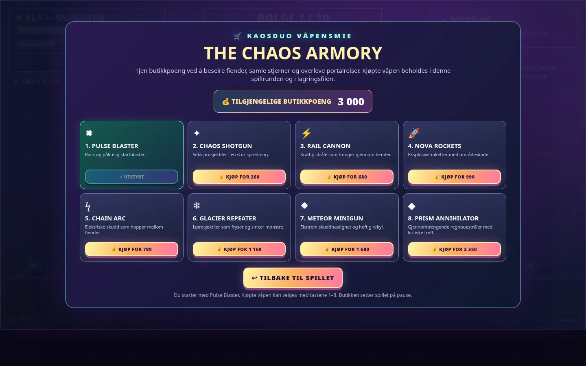
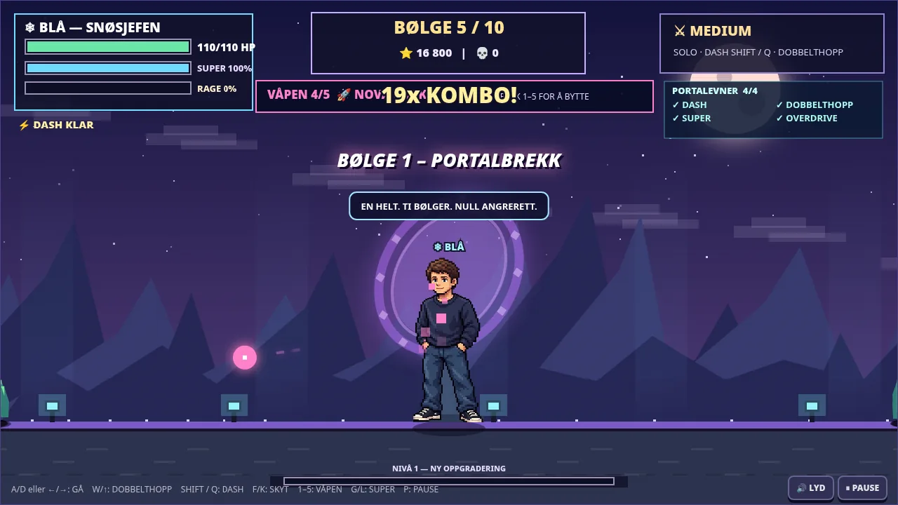
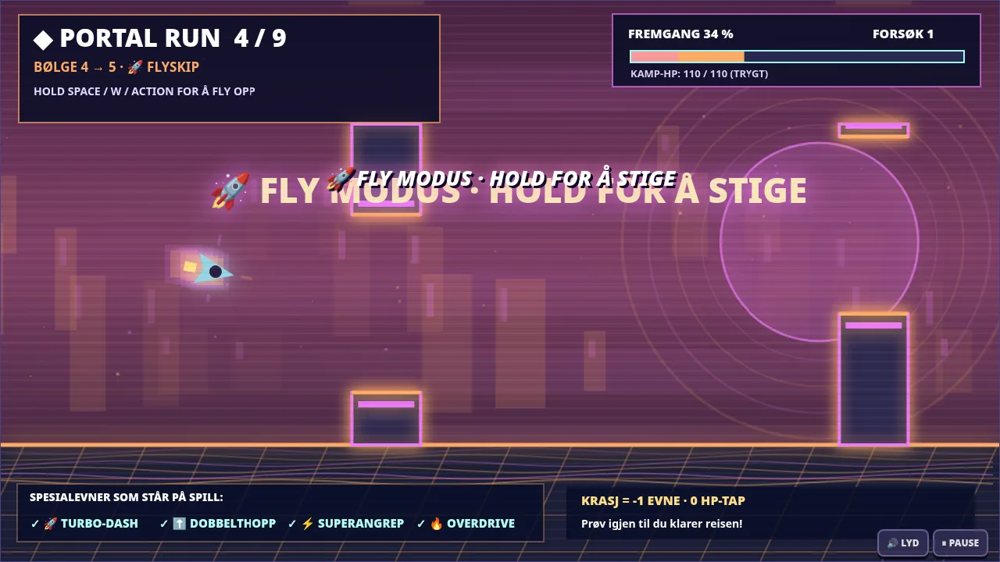
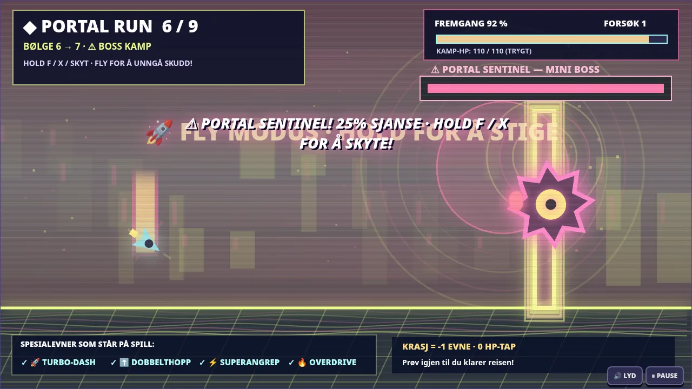
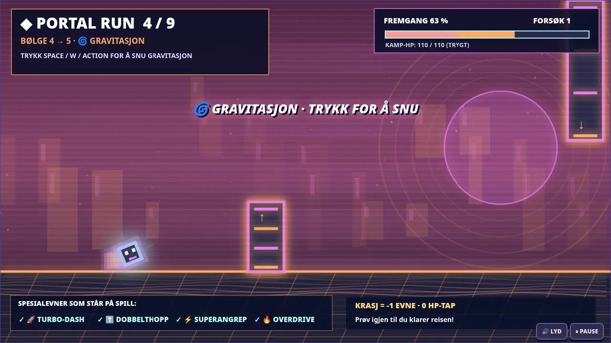
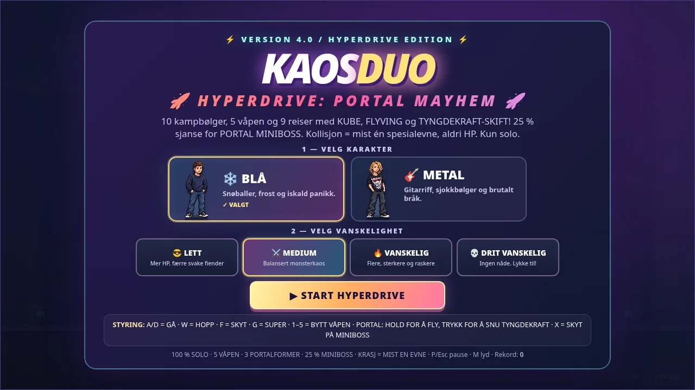

TEN WAVES
Fight through ten brutal waves and three multi-phase bosses, with portal journeys between rounds.
ENTER THE PORTAL.
One hero. Ten combat waves. Eight unlockable weapons. Nine journeys: 50% chance of a pseudo-3D neon highway race, 50% chance of a wild rhythm-platformer portal. Two completely original character soundtracks.


KAOSDUO is a frantic 2D pixel-art action game built around a single question: how long can you keep the portal monsters away?
Fight through ten brutal waves and three multi-phase bosses, with portal journeys between rounds.
Earn credits from enemies and portal runs. Buy eight weapons in the Armory and equip your favorites with 1–8.
Collect 17 combat upgrades and earn points to purchase weapons. Portal crashes still cost an ability, not HP.
Manual and automatic saves, JSON export/import, and your earned inventory travel with your character.
Choose Metal for an original rendered instrumental with heavy distorted guitar-like riffs, bass and real-sounding synth drums. Choose Blue for an original soft, cosy melody. Both looped MP3 tracks are included with the offline game, with Web Audio backup and a music-preview button.
Original riff, punchy kick and snare, distorted guitar-like synthesizers and heavy bass. Now an actual MP3 loop that starts when you press PLAY.
Warm bell notes, gentle synthesizer pads and calm arpeggios. An original soothing soundtrack included offline.
Earn shop points from battle and spend them on shotguns, rail cannons, rockets, chains, frost, miniguns and prism energy.
Load manual or automatic saves with your health, character, upgrades, arsenal and portal progress intact. Export a JSON backup.
After each combat wave, choose whether to spend coins in the Armory. Every intermission has a 50% chance of becoming a pseudo-3D neon highway drive: steer between three lanes, dodge traffic, collect coins and burn nitro. Otherwise enter an advanced geometric rhythm run with cube jumps, ship flight and gravity flips. Geometric runs retain a 25% chance of a surprise miniboss halfway through.

Arcade-style pseudo-3D driving with real lane collisions: A/D or arrow keys to dodge cars, barriers and laser traps. Hold Space or Shift to burn regenerating nitro. Collect road coins and rack up near-miss bonuses to spend in the Armory.
Failing costs exactly one available special ability, but never HP. Retry as often as you like. Touch controls included.
▶ PLAY NEON HIGHWAY ↗
Take a 50/50 chance: neon 3D-style driving or geometric madness. In geometry mode, jump, fly through laser gates, reverse gravity and battle surprise minibosses. Tap to jump, hold to fly, flip gravity, and shoot with F/X against the miniboss. Crashing never costs HP, but destroys one remaining special ability for the rest of your run.
Unlimited retries. Keep fighting when you finish. All nine routes are solvable without special powers.
▶ PLAY NEON HIGHWAY ↗Choose one character at the start. No second player. No AI sidekick. Just you versus the portal.
Cool head. Cold hands. Ice-cold panic. Slings snowballs and freezes foes before they get too close.
SPECIAL: ABSOLUTE ZEROMaximum volume. Minimum restraint. Fire musical projectiles and unleash a devastating solo attack.
SPECIAL: APOCALYPSE SOLOSame mission. Very different levels of pain.
Easy
Normal
Hard
Insane
Actual in-game captures from the new 3D-style highway, neon geometry world, miniboss and armory.








Fight ten monster waves, race or jump between them, collect road coins and keep your abilities intact. The v5.0 offline package includes both original soundtracks.
Android note: The older Android v1.1 beta is not the NEON HIGHWAY v5.0 release and is not verified on real devices. NEON HIGHWAY v5.0 currently supports the browser and offline HTML.